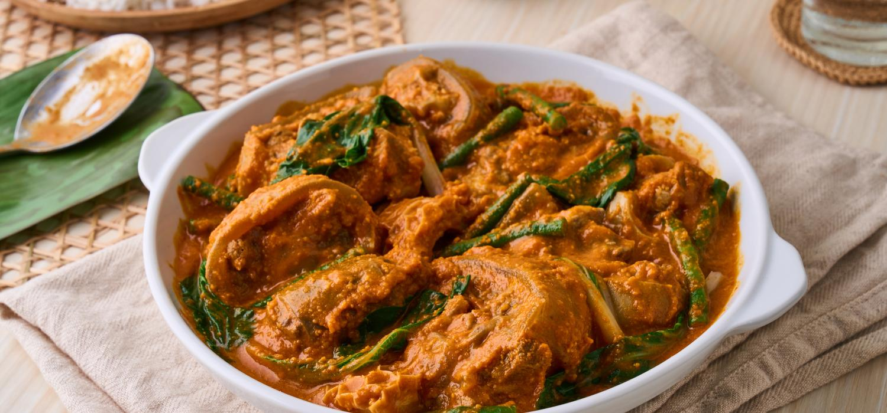

Kare-kare
A traditional Filipino dish known for its rich, creamy peanut sauce. Kare-Kare is a celebratory dish often served during special occasions and family gatherings, offering a comforting and hearty combination of savory, nutty, and slightly sweet flavors.
